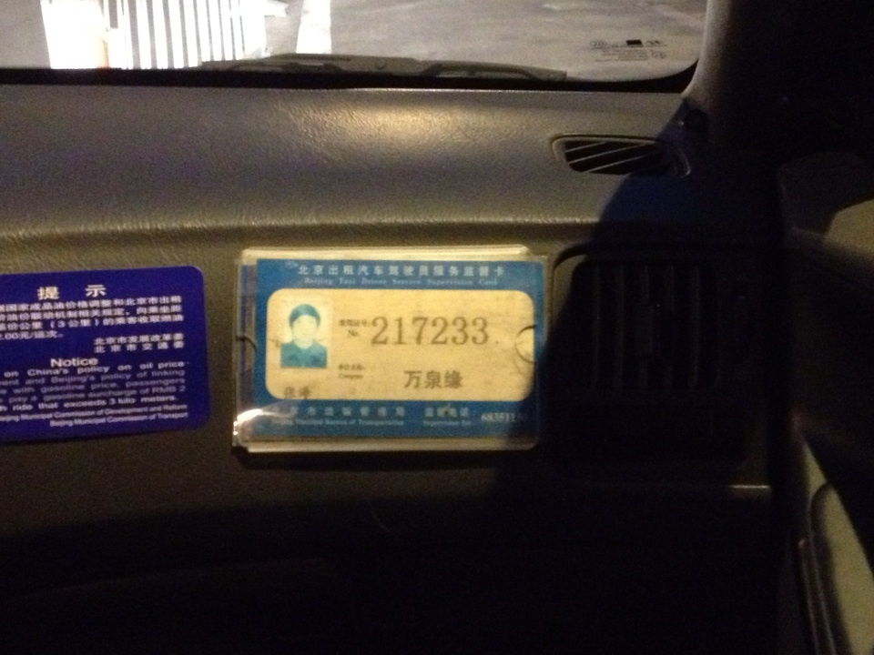
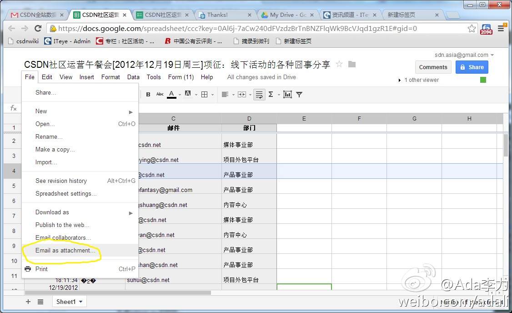
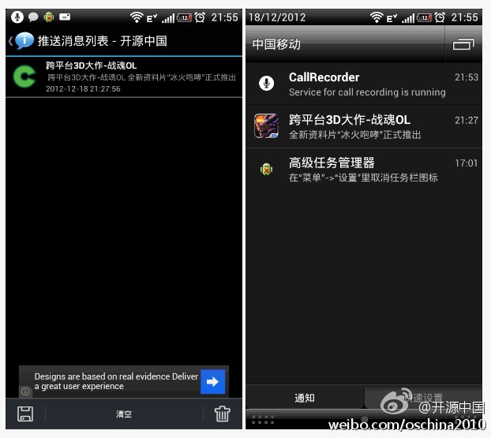

行业没有治理，客户投诉无门，服务越来越差。//@木易甲乙:拒载，未遂后各种折腾，开冷风，刹车，加速，各种开窗骂人。真TMD变态。 @交通北京 @北京交通广播@钢铁侠一瞬间:态度恶劣的北京出租车司机 @ 
//@飞象网项立刚: 这是我做了媒体十几年悟出的道理，别管你舒服不舒服，别管你平时觉得自己多了不起，多牛，商业上就是这样。 所以腾讯员工加班有食堂，央视加班的盒饭猪食一般。觉得社会责任之类，别来这里说了，这只是说商业价值。说体制的也别来说了，全世界传播都比不上服务。@飞象网项立刚:传播和服务的商业价值区别。比如研究了NFC在手机支付上的应用。写成一篇万字长文，投给杂志，稿费3000元，那还是特稿价了。依然这内容，也还万字，给某运营商咨询报告，卖30万。还是这内容改为：一种基于NFC的手机支付方法，申请个专利。别人用授权费300万。传播的商业价值低，服务才有高回报。
@CSDN李涛 提了个建议如何维护好技术讲师关系，CSDN把历届各种技术大会上的该讲师的讲座，照片，视频，报道等收集整理起来，做成可保存的介质送给讲师。这还可能成为“Diao丝”变“高帅富”的一个见证，有先例的。 @刘江总编 @孟迎霞
一件小事可以看出自己在线思维还是不够。因为要把报名表发给HR, 我先把Google Docs 中的表格下载, 存在本地硬盘，然后新建邮件，给HR发信，带上附件。 这会儿才突然想到用本地存储倒数据，真是多此一举，可以从Google Docs中直接发邮件附件，而且我的公司邮箱也早绑定到Google邮箱。 
总结起来，好像就是， 2012， 大家都很忙。@李涛TonyLi:还有2天就是世界末日了，是要写点什么了。 9月硅谷回来本想写一下所见所闻以及感想，但10月的移动开发者大会让此计划一拖再拖，一直到了11月，一个月十场全国开发者沙龙活动又让此计划推迟到了现在，再不写，可能就。。。
各种无节操，不得不防啊。//@开源中国: @当乐网 竟然有 OSC 客户端的1.8.0版本，不知是哪位穿越了帮我们把还未开发的版本发布了//@开源中国: 这个加了广告的 OSC 客户端是在@百度移动应用搜索 下载的，百度说是从木蚂蚁过来的，那么请问@木蚂蚁安卓市场 这个版本是谁上传的？@开源中国:各种无节操的广告推送，居然搞上了 OSC 的 Android 客户端 网页链接 ，除了问候他先人外，没什么可说的。难道有人利用 osc 开源的客户端搞了个广告山寨版？？？ 